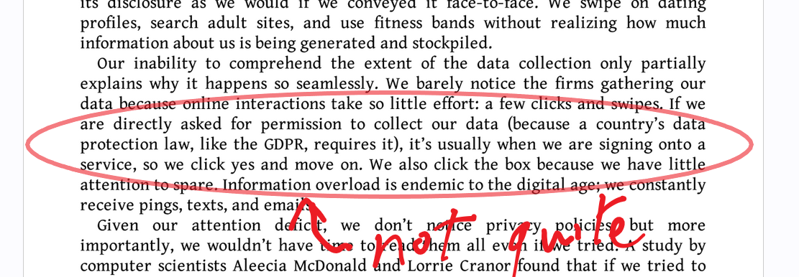

Week 2: From Privacy to Data Protection
Investigating GDPR
21 February, 2023
The module addresses…
- …concept(s) of privacy and data protection (not the same thing)
- in general
- in the courts
- …how concepts of privacy play out in different environments and regimes
- …how data protection interacts with various areas of concern
- …privacy and data protection futures
Our approach
- Law as a ‘living’ institution
- Negotiated between its authors and subjects “each application, seeking workable consensus rather than logical certainty (Edelman and Suchman, 1996, 932).
- Law both as a context and in a context
- Privacy as contested relationships in and against law
- Data protection as both regulatory requirement and compliance function - as a product of private and public governance
Schedule
| **Week*- | **Section / Title*- | jurisdiction focus |
|---|---|
| Week 2 | From privacy to data protection | UK and EU (Dr O’Kelly) |
| Week 3 | Data protection, platforms, and health | USA (Dr O’Dwyer) |
| Week 4 | Data protection and security | China (Dr O’Kelly) |
| Week 5 | Data protection, adequacy and trade | India (Dr O’Dwyer) |
| Week 6 | Privacy and data protection futures (Dr O’Dwyer) |
Independence is key
So…
How we assess you
- Group project (10%, in class)
- An app and privacy requirements
- Multi-disciplinary groups
- Client briefing note (90%, 2,000 words; due 2 May)
- Create a ‘GAP analysis’
- Apply your reading of privacy and DP regulation
- Consider appropriate register
Our focus today
- Group Work 1
- GDPR (not replicating the mindmap on Canvas)
- Consent
- Compliance
- Group Work wrap-up
Group Project (15 minutes)
- Assemble in your groups - see https://canvas.qub.ac.uk/courses/18463/groups
- Using the A3 sheet, negotiate and draw up a basic outline for an app that:
- Provides a health or wellbeing service
- Seeks to monetise the service
- Has social components so users can interact with each other
- Has some automated/ML/AI component
- Create a ‘discussion’ on your group homepage
- Upload a photo of your A3 sheet

This app will be updated in class each week (with some work at the end of class)
Our aim is to give some basic traction to the regulations we encounter on the module
General Data Protection Regulation
And DPA 2018
- Data subjects
- Controllers and processors
- Transfers (not this week)
- Governance
- Remedies
Basic principles
GDPR Article 5.1: personal data must be…
- processed lawfully, fairly and in a transparent manner in relation to individuals (‘lawfulness, fairness and transparency’);
- collected for specified, explicit and legitimate purposes and not further processed in a manner that is incompatible with those purposes; further processing for archiving purposes in the public interest, scientific or historical research purposes or statistical purposes shall not be considered to be incompatible with the initial purposes (‘purpose limitation’);
- adequate, relevant and limited to what is necessary in relation to the purposes for which they are processed (‘data minimisation’);
- accurate and, where necessary, kept up to date; every reasonable step must be taken to ensure that personal data that are inaccurate, having regard to the purposes for which they are processed, are erased or rectified without delay (‘accuracy’);
personal data must be…
- kept in a form which permits identification of data subjects for no longer than is necessary for the purposes for which the personal data are processed; personal data may be stored for longer periods insofar as the personal data will be processed solely for archiving purposes in the public interest, scientific or historical research purposes or statistical purposes subject to implementation of the appropriate technical and organisational measures required by the GDPR in order to safeguard the rights and freedoms of individuals (‘storage limitation’);
- processed in a manner that ensures appropriate security of the personal data, including protection against unauthorised or unlawful processing and against accidental loss, destruction or damage, using appropriate technical or organisational measures (‘integrity and confidentiality’).
Article 5(2):
The controller shall be responsible for, and be able to demonstrate compliance with, paragraph 1 (‘accountability’).
Data subjects
- Art 1 GDPR “protects fundamental rights and freedoms of natural persons and in particular their right to the protection of personal data”
- Art 4(1): Article 4(1) GDPR clarifies that: ‘personal data’ means:
- any information
- relating to 2 an identified or
- identifiable natural person (‘data subject’)
- identifiable =
- one who can be identified,
- directly or indirectly,
- an identifier such as a name, an identification number, location data, an online identifier or to one or more factors specific to the physical, physiological, genetic, mental, economic, cultural or social identity;
What about a dynamic IP address?
If the person can be identified from the address: Patrick Breyer v. Germany, CJEU, 19 October 2016, Case 582/14
Controllers and processors
Article 4(7) GDPR:
A ‘controller’ is:
- the natural or legal person, public authority, agency or any other body
- which alone or jointly with others
- determines the purposes and means of the processing of personal data
A ‘processor’ is:
- a natural or legal person, public authority, agency or any other body
- which processes personal data on behalf of the controller
Google Spain v, Costeja CJEU, 13 May 2014, C- 131/12: was Google a processor or a controller?
Can data only be processed on the basis of consent?

Citron DK, The Fight for Privacy: Protecting Dignity, Identity, and Love in the Digital Age (First edition, WW Norton & Company, Inc 2022), 5
Lawful processing
Art 6(1): Processing shall be lawful only if and to the extent that at least one of the following applies:
a. the data subject has given consent to the processing of his or her personal data for one or more specific purposes;
b. processing is necessary for the performance of a contract to which the data subject is party or in order to take steps at the request of the data subject prior to entering into a contract;
c. processing is necessary for compliance with a legal obligation to which the controller is subject;
d. processing is necessary in order to protect the vital interests of the data subject or of another natural person;
e. processing is necessary for the performance of a task carried out in the public interest or in the exercise of official authority vested in the controller;
f. processing is necessary for the purposes of the legitimate interests pursued by the controller or by a third party, except where such interests are overridden by the interests or fundamental rights and freedoms of the data subject which require protection of personal data, in particular where the data subject is a child.
Conditions for Consent (Art 7)
Where processing is based on consent, the controller shall be able to demonstrate that the data subject has consented to processing of his or her personal data.
If the data subject’s consent is given in the context of a written declaration which also concerns other matters, the request for consent shall be presented in a manner which is clearly distinguishable from the other matters, in an intelligible and easily accessible form, using clear and plain language. Any part of such a declaration which constitutes an infringement of this Regulation shall not be binding.
The data subject shall have the right to withdraw his or her consent at any time. The withdrawal of consent shall not affect the lawfulness of processing based on consent before its withdrawal. Prior to giving consent, the data subject shall be informed thereof. It shall be as easy to withdraw as to give consent.
When assessing whether consent is freely given, utmost account shall be taken of whether, inter alia, the performance of a contract, including the provision of a service, is conditional on consent to the processing of personal data that is not necessary for the performance of that contract.
Consent
- A burden of proof on the data controller that consent has been acquired
- Opt-in
- Purpose limitations & data minimisations
- Post-facto redress (erasure; objections;)
- Risk assessments
- Dark patterns
Legitimate interests
- In fraud prevention (recital 47)
- In transmitting data within organisational/corporate groups, say for tax purposes (recital 48)
- For the purposes of network security (recital 49)
- For direct marketing purposes?
- Possibly, but careful assessment required
- Including whether the data subject can reasonably expect that processing to take place at the time and in the context of the collection of the personal data
- So a high threshold for legitimate interest
Enforcing GDPR: roles and offices
- GDPR as a risk regulation/compliance framework
- Based on food and chemical safety…
- …but rooted in a (claimed) tradition of fundamental privacy rights
- The data protection officer
- National authorities
- National courts
The Data Protection Officer
Art 37(1): “The controller and the processor shall designate a data protection officer in any case where:”
- the processing is carried out by a public authority or body, except for courts acting in their judicial capacity;
- the core activities of the controller or the processor consist of processing operations which, by virtue of their nature, their scope and/or their purposes, require regular and systematic monitoring of data subjects on a large scale; or
- the core activities of the controller or the processor consist of processing on a large scale of special categories of data pursuant to Article 9 and personal data relating to criminal convictions and offences referred to in Article 10
Though perhaps it’s advisable to do so even if an org doesn’t meet these criteria?
The Data Protection Officer
The DPO must be:
- Free to act in an independent manner
- No retaliation (a protected role)
- Present for DP-relevant decisions
- Given time to carry out their duties
- Independent of the DP activities
- Trained and qualified
- Accessible to data subjects
- “involved, properly and in a timely manner, in all issues which relate to the protection of personal data” (Art. 38(1))
- Consulted when a breach occurs
Breaches
There are two levels of GDPR fines:
- 4% of global annual turnover for the preceding year or €20 million, whichever is greater, for violating the basic principles of data protection or for violating data subjects’ rights.
- 2% of global annual turnover or €10 million, whichever is greater, for not properly filing and organising records, for not notifying the supervisory authority and data subject about a breach and for not conducting impact assessments.
Governance
What links data protection and security?
Art. 32: Taking into account the state of the art, the costs of implementation and the nature, scope, context and purposes of processing as well as the risk of varying likelihood and severity for the rights and freedoms of natural persons, the controller and the processor shall implement appropriate technical and organisational measures to ensure a level of security appropriate to the risk including inter alia as appropriate:
- the pseudonymisation and encryption of personal data;
- the ability to ensure the ongoing confidentiality, integrity, availability and resilience of processing systems and services;
- the ability to restore the availability and access to personal data in a timely manner in the event of a physical or technical incident;
- a process for regularly testing, assessing and evaluating the effectiveness of technical and organisational measures for ensuring the security of the processing.
So…
- …how critical is security for GDPR compliance?
- …how compliant do you think data processors and controllers are?
- …if there was a fully secure dispensation could we live happily ever after?
What is being balanced in the GDPR?
- (A reading of) the online economy as context
- Surveillance capitalism
- Network effects
- Classification, cohorts and automated decisions
- Surveillance states?
- What is the difference between
- …individual interests in control?
- …individual interests in autonomy?
- Where does the ‘right to erasure’ fit in to the different interests for instance?
- How feasible is a ‘right to an explanation’ in the context of semi-automated decisions?
Back to your groups
- Create a ‘discussion’ on your group homepage
- Enter three governance changes your group consider they ought to prioritise for GDPR compliance and why
- 100-200 words should do it!
Questions?
Ciarán O’Kelly | 21/02/2023